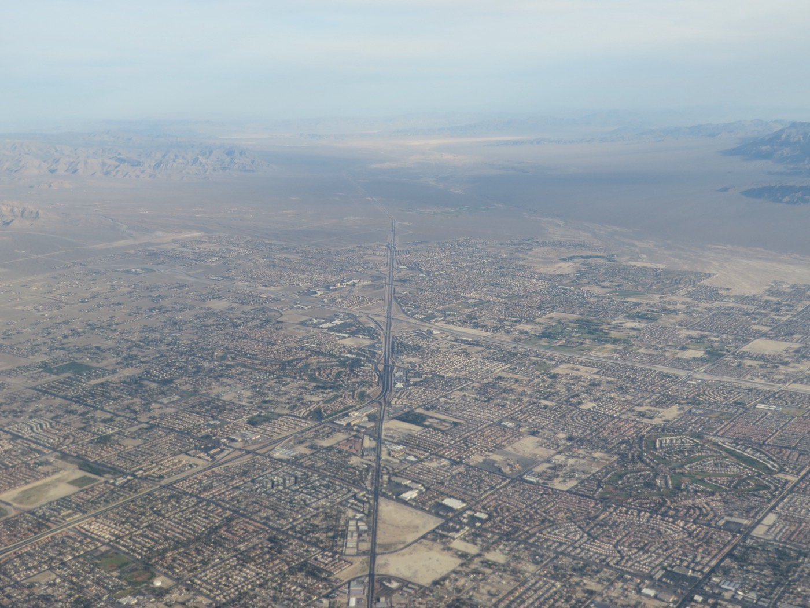
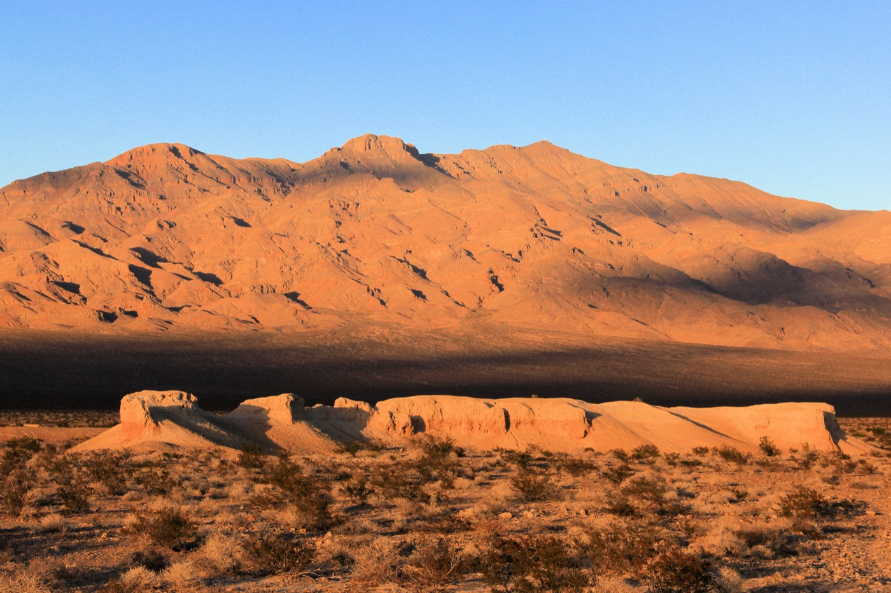
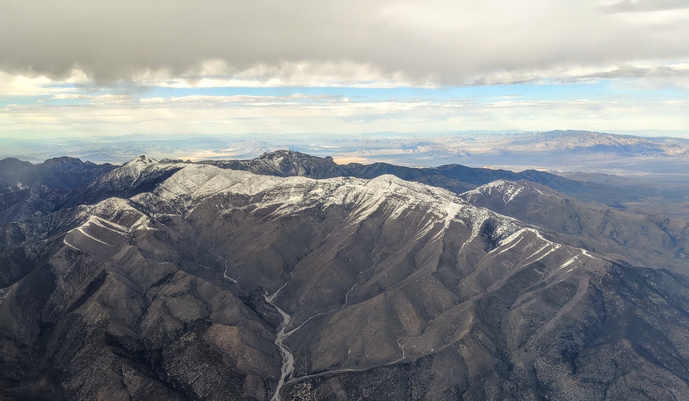

When most people picture Las Vegas, they picture the Strip — the neon, the casinos, the 3 a.m. everything. That's a real place, and it's genuinely fun. But it's not where I live. I live about 25 minutes northwest of all that, in a quiet, sun-drenched suburb called Centennial Hills, and it might be the best-kept secret in the whole valley.
Centennial Hills is the far-northwest corner of Las Vegas, up against the desert foothills where the city runs out of pavement and the mountains take over. It's newer, it's calm, and it's built for people who want space, sunshine, and nature five minutes from the front door — while the entire spectacle of the Strip stays available on the nights you actually want it. As someone who works a full-remote job in tech and design, I've come to think of this as close to the ideal setup. Here's why.
Why Centennial Hills, Specifically
The Las Vegas valley is big, and every corner of it has a different personality. Summerlin gets a lot of the attention (and the higher price tags). Henderson is its own thriving city to the southeast. Centennial Hills, up in the 89149 and 89131 ZIP codes, is the newer, quieter, more affordable cousin — a master-planned sprawl of homes built largely in the 2000s and 2010s, which means wide streets, two-car garages, and floor plans with room for a real home office.
What makes it work day to day is that it's genuinely self-contained. There's a regional hospital (Centennial Hills Hospital), big-box shopping at Centennial Center, grocery stores on every other corner, and enough parks and trails that you rarely need to drive into the city core for ordinary life. It sits at a slightly higher elevation than the valley floor, so it tends to run a few degrees cooler and catches the breeze coming off the Spring Mountains. And because it's the last developed neighborhood before the open desert, you're never more than a few minutes from a trailhead.

Centennial Hills, northwest Las Vegas — the suburb where the city meets the desert.
The Weather: 300 Days of Sun
Let's talk about the thing that actually changes your life here: the sun. Las Vegas gets more than 300 sunny days a year, and once you've lived with that kind of reliable light, gray winters start to feel like a bug in the system. You plan your week around what you want to do, not around the forecast, because the forecast is almost always "sunny."
The honest version: summers are hot. July and August routinely hit 100–110°F, and there are stretches where the middle of the day is simply for indoors. But it's a dry heat — humidity often sits in the single digits — so mornings and evenings are pleasant even in peak summer, and you learn to run, hike, and walk the dog early. The rest of the year is the payoff. Spring and fall are close to perfect, and winters are mild: 55–65°F afternoons, cool nights, the occasional dusting of desert rain. You'll wear a jacket in January and shorts by March.
Nature at Your Doorstep
This is the part people don't expect from Las Vegas, and it's the part I'd argue about the loudest. Centennial Hills is one of the most nature-adjacent places I've ever lived. Within an hour you can go from red-rock desert to alpine pine forest to Ice Age fossil beds, and none of it requires a plane ticket.

Golden hour in the high desert just north of Centennial Hills.
Red Rock Canyon
The crown jewel. Red Rock Canyon National Conservation Area is about 25 minutes from Centennial Hills, and it's world-class — a 13-mile scenic loop wrapped around towering red-and-cream sandstone cliffs, with everything from flat family walks to serious multi-pitch rock climbing. World-renowned climbers fly in for this rock; you get to treat it as your weekend backyard. Go early, bring water, and the desert light in the first hour after sunrise is something you don't forget.
Mount Charleston
Here's the trick nobody tells you about Vegas: 45 minutes from the desert heat, you can be standing in a pine forest under snow. Mount Charleston and the Spring Mountains top out near 12,000 feet, which means the temperature up there runs 20–30°F cooler than the valley. In summer it's a green, shaded escape with real hiking trails; in winter there's sledding and skiing at Lee Canyon. Having genuine alpine country that close to home still feels slightly unfair.

Mount Charleston — snow and pine forest, 45 minutes from the desert floor.
Floyd Lamb Park & Tule Springs
You don't even have to leave the neighborhood. Floyd Lamb Park at Tule Springs is right there in the northwest valley — shaded ponds, walking paths, roaming peacocks, and picnic lawns that feel like an oasis. Next to it, Tule Springs Fossil Beds National Monument protects Ice Age fossil grounds where mammoths and ground sloths once roamed. It's a genuinely strange and wonderful thing to have a national monument as your local trail.
The Outdoor Scene: Hiking, Trails & Riding
Because the terrain is this varied and this close, the outdoor culture here is real, not aspirational. On a normal weekend you can hike slot canyons at Red Rock, trail-run the desert washes near Tule Springs, mountain bike at Cottonwood Valley or over in Bootleg Canyon, or drive an hour to Valley of Fire for the most otherworldly red sandstone in the state. Road cyclists climb the Red Rock loop before the heat sets in; climbers are on the sandstone by dawn.
The single best upgrade I made was learning the trail network around my own side of the valley — the quiet, unmarketed washes and ridge lines you'd never find from a highway. A good trail app turns "I think there's a path over there" into an actual route with mileage, elevation, and wrong-turn alerts, which matters a lot in the desert where a missed junction costs you real water.
The Wellness & Run-Club Scene
Vegas has quietly become a fitness town, and the northwest is a big part of that. There's a surprisingly deep run-club culture — weekly group runs that leave from local running shops and breweries, half-marathon and trail-race calendars that run most of the year, and a whole social layer built around 6 a.m. miles before the heat. If you've ever wanted a built-in reason to lace up and meet people, moving here basically hands it to you.
Beyond running, the boutique-fitness footprint is dense — CrossFit boxes, Orangetheory and F45 studios, climbing gyms, yoga and Pilates studios, and big all-in-one clubs. The desert lends itself to a recovery-minded, get-outside-early rhythm, and once you're plugged into a couple of standing workouts, the isolation people fear about remote work mostly evaporates. Your calendar fills with humans without ever touching an office.
Working Remote as a Tech Designer Here
This is where it all clicks for me. I work a full-remote job in tech and design, and Centennial Hills is close to purpose-built for that life. Start with the math: Nevada has no state income tax, and housing costs a fraction of coastal California, so the same salary simply goes further. That difference buys the thing remote work actually needs — space. A dedicated office, fast fiber internet, and enough house that work and life don't collide.
Then there's the rhythm. When your commute is a walk down the hall, the reward for finishing a focused block is that Red Rock is 25 minutes away and the sun is always out. I'll take a mid-day trail break the way office workers take a coffee break. And when I do need to travel for a shoot or a client, Harry Reid International Airport is 25–40 minutes south with nonstops to just about everywhere — one of the most underrated perks of basing a location-flexible career in Vegas. If you're curious how I structure the actual work side of it, I wrote a whole piece on the remote-work-and-travel lifestyle.
You don't have to be a designer for any of this to apply. Engineers, writers, marketers, founders, customer-success folks — anyone whose job travels through a laptop gets the same deal: low taxes, big light-filled space, and nature on tap.
Entertainment on Your Terms
Here's the quiet luxury of living out here: you get the calm of the suburbs and a world-class entertainment city on standby. The Strip is 25–30 minutes away, which is exactly the right distance — far enough that daily life is peaceful, close enough that "let's go see a show tonight" is a totally normal Tuesday. World-class dining, residencies and Cirque productions, arena concerts, the Golden Knights, Raiders games at Allegiant, Formula 1 down Las Vegas Boulevard, and of course the Sphere, which genuinely has to be seen to be believed.
The Strip — world-class entertainment, kept at a comfortable 25-minute distance.
The difference between visiting and living here is that you get to ration it. Tourists cram a lifetime of Vegas into four nights. You dip in when something's worth it and drive home to quiet. That balance — big-city amenities, small-town calm — is the whole pitch.
What It Costs to Live Here
Cost is a real reason people move to Las Vegas, and Centennial Hills sits in a comfortable middle. Home prices here generally run below Summerlin and well below anything comparable in California or the Pacific Northwest, while still giving you newer construction and good schools. No state income tax is the headline, but it compounds: lower property taxes than many states, and a cost of living that lets a remote salary stretch into a lifestyle, not just a budget.
It's not the cheapest it used to be — Vegas has grown fast and prices have climbed with it — but dollar for dollar against the coasts, you get dramatically more house, more sun, and more access to the outdoors for the money.
The Honest Downsides
No place is perfect, and I'd rather you hear the trade-offs from me than find them yourself in August.
- The summer heat is no joke. Multi-week stretches above 105°F are normal. You adapt — early mornings, late evenings, midday indoors — but if you hate heat, this will test you.
- It's car-dependent. The valley is spread out and public transit is limited. You will drive for basically everything, and being on the far northwest edge means you're 25–40 minutes from the airport and the Strip.
- Growth and traffic. The whole city is booming, and the northwest is one of the fastest-growing parts of it. New rooftops mean more cars on US-95 and the 215.
- It's the desert. Water is a real, long-term regional conversation, and the landscape is beautiful but stark — if you need lush and green year-round, this isn't that.
- Quiet is the point — and the catch. If you want to walk out your door into nightlife, you're in the wrong neighborhood. Out here, the action is a drive away by design.
Frequently Asked Questions
Is Centennial Hills a good place to live?
For families and remote workers, it's one of the best areas in the valley: newer homes, good schools, its own hospital and shopping, a slightly cooler microclimate, and quick access to Red Rock and Mount Charleston. You trade Strip nightlife for quiet and sunshine — which, for a lot of people, is the whole reason to move.
What is the weather like in Las Vegas?
More than 300 sunny days a year with very low humidity. Summers are hot (100–110°F in July and August), winters are mild (55–65°F afternoons). Centennial Hills' higher elevation makes it run a touch cooler than the valley floor.
What is there to do outdoors near Centennial Hills?
Red Rock Canyon (~25 min) for hiking and climbing, Mount Charleston (~45 min) for pine forest and winter snow, and Floyd Lamb Park and Tule Springs Fossil Beds right in the neighborhood. Add trail running, mountain biking, road cycling, and day trips to the Grand Canyon and Valley of Fire.
Is Las Vegas good for remote workers?
Very. No state income tax, housing cheaper than coastal California, homes big enough for a real office, fast internet, and an international airport 25–40 minutes away. For a full-remote tech or design job, the mix of low taxes, sun, and outdoor access is tough to beat.
If you've been imagining Las Vegas as nothing but casinos and buffets, Centennial Hills is the counter-argument. It's sunshine and sandstone and pine forest and quiet streets, with the greatest entertainment city on earth idling politely in the distance for whenever you want it. For a remote career and an outdoor life, I haven't found a better place to point the compass.
Image credits: Red Rock Canyon (public domain); Tule Springs area, National Park Service (public domain); Centennial Hills aerial by Ken Lund (CC BY-SA 2.0); Mount Charleston by Dicklyon (CC BY-SA 4.0); Las Vegas skyline by Mike McBey (CC BY 2.0). Cropped and resized from the originals.